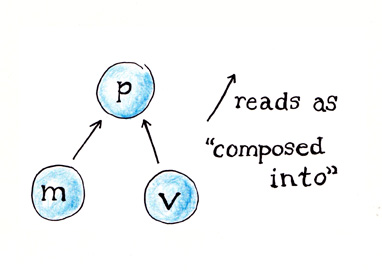

(credit Mike Karlesky)
Matt Fletcher
Atomic Object


DOS simulators => Java + JRuby simulators
Demos!
Techs
Java
(we all know what that is)
Ruby interpreter on the JVM
Production Simulator - JRuby 1.0 (2007)
Write Ruby
class ConfigurationFacade
def initialize
@config = ...
end
def method_missing(name, *args, &block)
@config[name.to_s]
end
def capital_investment
@config["capital_investment"].present?
? @config["capital_investment"]
: 0
end
endInterface with Java
class AgingReportView
def view(parent)
@table_model = ReadOnlyTableModel.new
@aging = JTable.new(@table_model)
@aging.row_selection_allowed = false
@aging.cell_selection_enabled = true
end
endCross-pollinate for maximum goodness
def invoke_later(&block)
if javax.swing.SwingUtilities.
is_event_dispatch_thread
block.call
else
...
end
endSwingUtilities.invoke_later(Runnable.impl do
begin
block.call
rescue Exception => ex
puts ex.message
puts ex.backtrace.join("\n")
end
end)def add_row(row)
invoke_later do
@table_model.add_row row.to_java
end
end
def clear_rows
invoke_later do
@table_model.clear
end
endRSpec for testing
2120 unit tests
286 system tests
Core libs
- Hardmock - mocking library (retired)
- Constructor - object construction
- DIY - dependency injection
Substance - look and feel
Apache Batik - SVG
Java scenegraph
JFreeChart
Beta distribution
Bouncy Castle - encryption
YAML - configuration
NSIS - Windows installer
Launch4J - Windows Java app launcher
.app bundle on Mac
shell script on Linux
Development
Presenter First

Write Presenter tests first to define view & model behavior
Just say 'When'
describe Ui::PlayPresenter do
before do
create_mocks(:view, :model)
@play = @view.trap.when :play_clicked
@pause = @view.trap.when :pause_clicked
Ui::PlayPresenter.new(@model, @view)
end
endit 'pauses the sim when Pause is clicked' do
@model.expects.pause
@view.expects.hide_play
@view.expects.show_pause
@pause.trigger
verify_mocks
endclass PlayPresenter
constructor :model, :view
def setup
@view.when :pause do
@model.pause
@view.hide_play
@view.show_pause
end
end
endit 'starts the sim when Play is clicked' do
@model.expects.paused?.returns false
@model.expects.play
@play.trigger
verify_mocks
endit 'resumes the sim when Play
is clicked after a Pause' do
@model.expects.paused?.returns true
@model.expects.resume
@play.trigger
verify_mocks
endclass PlayPresenter
constructor :model, :view
def setup
@view.when :play_clicked do
if @model.paused?
@model.resume
else
@model.play
end
end
end
endPresenters tend to have simple, targetted tests and behavior
Heavier behavior defined in models
Views are thin walls around untestable code
Usually GUI components, but could be anything hard to test
- hardware registers and ports
- Android activities & utilities
- things without interfaces (java)
- complex third-party api